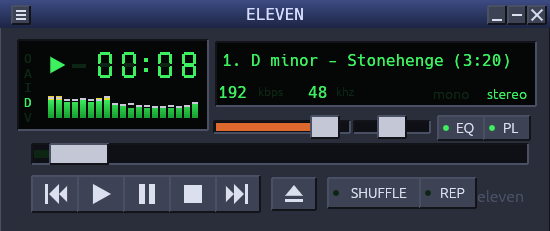

The player
- Play, pause, stop and skip with the buttons, or with Z X C V B on the keyboard.
- Click the clock to switch between time played and time left.
- Click the visualizer to switch between a spectrum analyzer and an oscilloscope.
- The scrolling title shows the track, or the song a radio station is playing right now.
- Seek, set the volume and balance the speakers with the sliders.
- EQ and PL show or hide the equalizer and playlist. Right-click the player for the full menu.